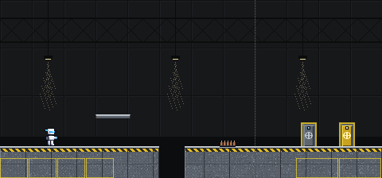
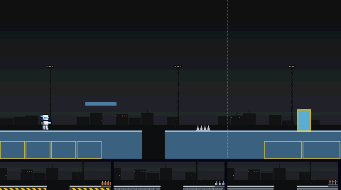
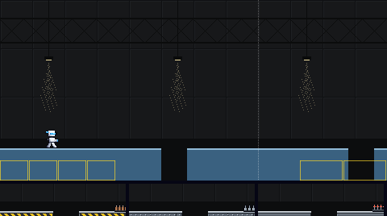
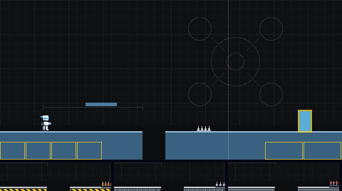
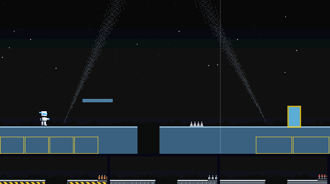
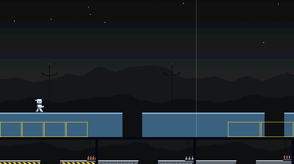
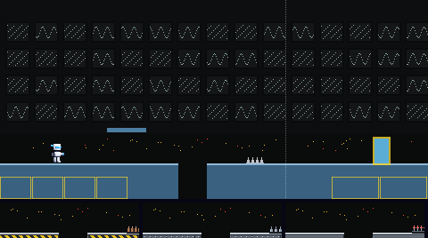
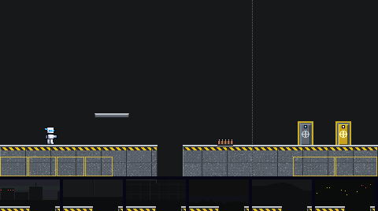
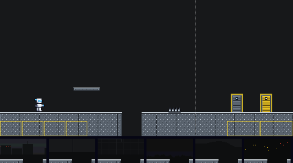

The way to Proto Mk0's door. Six backdrops, and three materials (each a floor, platform, spikes, boss door and exit door), all built from his colours. Batch 1 of 3.
BACKDROP · PICKED 2 HANGARMATERIAL · PICKED A BUNKER CONCRETE
Picked by the owner on 5 Nov 2026: backdrop 2, the hangar, and material A, bunker concrete. Batch 1 is in the game.
YOUR PICK · 2 WITH A
Backdrop 2 behind material A, with the player standing still. The boss door is on the left, the exit door on the right.

SIX BACKDROPS
Each is shown behind today's plain pieces, so only the backdrop changes. The strip under it is its pit edge with floors A, B and C in front. The two marked MOVING scroll in layers, the far ones slower; their pictures move.
1 TEST RANGEDusk over a proving ground: low bunkers with warning lights and floodlight towers.

2 HANGAR MOVINGPICKEDInside a test hangar: wall panels far off, girders nearer, lamps hanging closest. Scrolls in three layers.

3 BLUEPRINTThe drone that started it all, drawn up on a design grid.

4 SEARCHLIGHTSNight over the perimeter: stars, two crossing searchlights, a sandbag wall.

5 RADAR RIDGES MOVINGRidges of a listening post: dishes and masts with blinking tips. Scrolls in three layers.

6 CONTROL ROOMA wall of monitors watching the range, a console with blinking lights.

THREE MATERIALS
Each shows the floor with a pit, a platform, spikes, the boss door (left) and the exit door (right), in front of today's flat colour. The strip under it is its pit edge against backdrops 1 to 6. The contrast numbers are the worst against any of the six; the game asks at least 2 for the ground, 4.5 for its lit edge and 4.5 for the white player on it.
A BUNKER CONCRETE PICKEDPoured slabs with expansion joints, a yellow-and-black hazard band under the lip, rusty rebar spikes and a blast hatch for a door.Contrast: ground 3.26, edge 8.84, player 5.89.

B DIAMOND PLATEStudded floor plate on steel beams, polished steel cones and a slatted shutter.Contrast: ground 3.10, edge 9.10, player 6.19.

C STEEL GRATINGOpen grating over darkness on heavy beams, prongs with warning-red tips and a field door.Contrast: ground 3.10, edge 8.33, player 6.18.